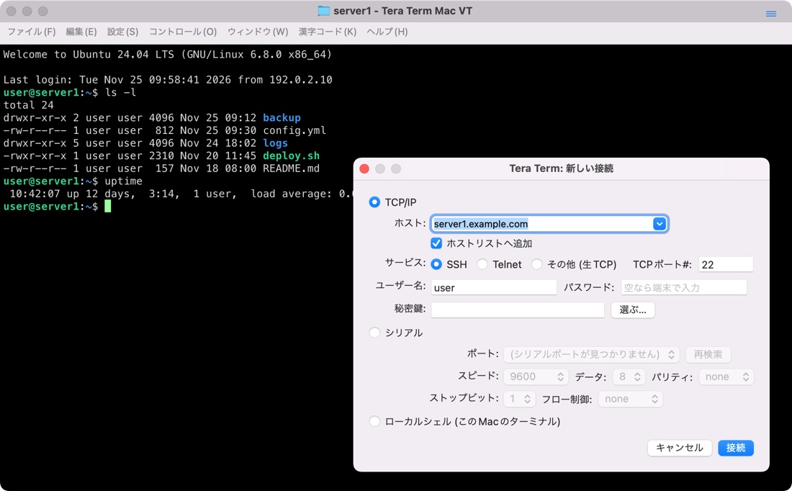
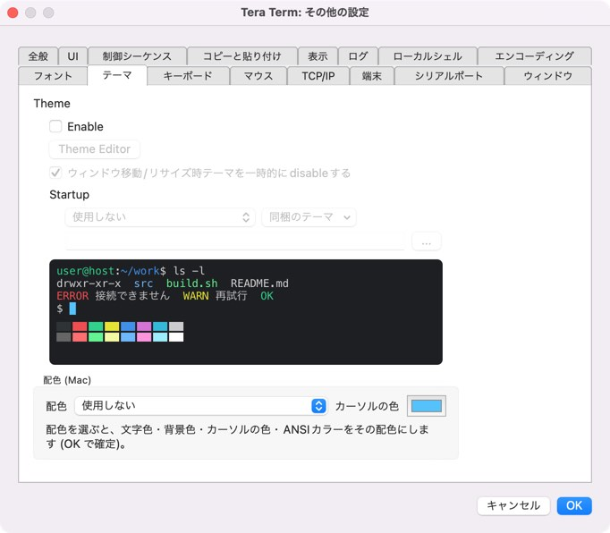

Tera Term Mac
Tera Term を macOS 用に移植したターミナルです。
いつもの SSH やマクロを Mac でそのまま使えます。
Tera Term Mac は、TeraTerm Project の Tera Term を fork し、独自に Mac へ移植したものです。原作者 T. Teranishi (寺西 高) 氏の公認を受け、TeraTerm Project とは別に開発しています。Mac 版についてのお問い合わせは、TeraTerm Project ではなく Tera Term Mac の Issues へお願いします。




主な機能
- SSH・Telnet・シリアルポート・この Mac のローカルシェルに接続
- TTL マクロ (Windows 版の .ttl をそのまま実行)
- TeraTerm Menu で接続先を登録 (パスワードはキーチェーンに保存)
- ログの記録、XMODEM・YMODEM・ZMODEM・Kermit などのファイル転送
- タブと、1 つのウィンドウに画面を並べる窓割り
- 画面の言語は 14 種類。自動アップデート
ドキュメント
使い方は、すべてドキュメントにまとめています。アプリの [ヘルプ] メニューからも同じものが読めます。
ダウンロードとインストール
- 下のボタンで
TeraTermMac.dmgをダウンロードします。 - DMG を開き、Tera Term Mac をアプリケーションフォルダへドラッグします。
- アプリケーションフォルダから開きます。新しい版が出ると、アプリが知らせてくれます。